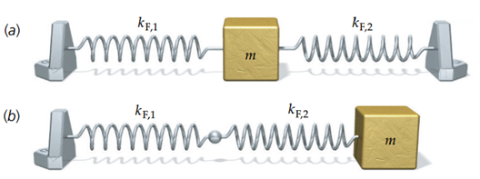

\(\star\star\star\)a) Beweisen Sie
für einen Federschwinger, der sich nach der Funktion \[x(t) = x_0 \cos(\omega_0 t)\] bewegt, dass
zu jedem Zeitpunkt die Gesamtenergie konstant ist.
b) Wie groß ist diese Gesamtenergie, ausgedrückt durch \(x_0\) und \(k\)?
Woraus setzt sich die Energie zusammen?
Aus potentieller Energie der Feder und kinetischer Energie. Die
potentielle Energie der Feder können Sie nachschlagen. Die kinetische
Energie berechnen Sie mit Hilfe der Geschwindigkeit. Da sie den Ort als
Funktion der Zeit kennen, können Sie mit Hilfe der Kinematik die
Geschwindigkeit ausrechnen, alles als eine Funktion der Zeit.
Wir kennen die Bewegungsgleichung: \[x(t) = x_0 \sin(\omega t), \quad v(t) = \frac{dx}{dt} = x_0 \omega \cos(\omega t)\] Aus der Bewegungsgleichung erhalten wir die potenzielle und die kinetische Energie zu jedem Zeitpunkt \(t_0\). Dabei ist die potenzielle Energie die Arbeit, um die Feder gegen die Federkraft \(F = -k x\) zu spannen: \[E_{\text{kin}}(t_0) = \frac{1}{2} m v^2(t_0) = \frac{1}{2} m x_0^2 \omega^2 \cos^2(\omega t_0)\] \[E_{\text{pot}}(t_0) = \frac{1}{2} k x^2(t_0) = \frac{1}{2} k x_0^2 \sin^2(\omega t_0)\] Die gesamte Energie ist die Summe der beiden: \[E_{\text{tot}} = E_{\text{kin}} + E_{\text{pot}} = \frac{1}{2} m x_0^2 \omega^2 \cos^2(\omega t_0) + \frac{1}{2} k x_0^2 \sin^2(\omega t_0)\] Aus der Lösung der Schwingungsgleichung (siehe Vorlesung) kennen wir den Zusammenhang zwischen Federkonstante und Kreisfrequenz: \[\omega = \sqrt{\frac{k}{m}}\] Diesen Ausdruck für die Kreisfrequenz setzen wir bei der kinetischen Energie ein und erhalten schließlich: \[E_{\text{kin}} + E_{\text{pot}} = \frac{1}{2} x_0^2 k \left(\sin^2(\omega t_0) + \cos^2(\omega t_0)\right) = \frac{1}{2} k x_0^2\] Am Schluss nutzen wir, dass \(\sin^2 + \cos^2 = 1\). Die Summe von kinetischer und potenzieller Energie ist konstant.
\(\star\star\)
Eine Last der Masse \(10 \, \text{t}\) hängt an einer Laufkatze und wird mit der Geschwindigkeit \(1.0 \, \text{m/s}\) horizontal bewegt.
Der Schwerpunktabstand der Last vom Aufhängepunkt beträgt \(5.0 \, \text{m}\).
Beim plötzlichen Bremsen der Laufkatze beginnt die Last zu schwingen.
Wie hoch ist die höchste Beanspruchung (Zugkraft) des Seiles?
Mit welcher Amplitude schwingt die Last?
a) Betrachten Sie die Last: Welche Kräfte wirken auf sie, wenn sie
anfängt zu schwingen? Um welche Bewegung handelt es sich?
Um eine Kreisbewegung.
b) Schauen Sie die Eigenfrequenz nach.
Schreiben Sie die Gleichung einer Schwingung auf, leiten Sie daraus die
maximale Geschwindigkeit ab. Diese kennen Sie ja. Daraus sollten Sie
dann die Amplitude der Schwingung (also max. Auslenkung) besteimmen
können.
a) Belastung Gegeben: \[m
= 10 \, \text{t} = 1 \cdot 10^4 \, \text{kg}, \quad v = 1.0 \,
\text{m/s}, \quad R = 5.0 \, \text{m}\] Die Belastung \(F\) setzt sich aus der Gewichtskraft und
der Radialkraft zusammen: \[F = mg + m
\frac{v^2}{R}\] Einsetzen der Werte: \[F = m \left(g + \frac{v^2}{R} \right) = 10^4
\left(9.81 + \frac{1.0^2}{5.0} \right) \, \text{N}\] Berechnung:
\[F = 10^4 \cdot 10.01 = 102'000 \,
\text{N}\] Die Radialkraft, die erforderlich ist, um die Masse
auf der Kreisbahn zu halten, addiert sich zur Gewichtskraft der
Last.
b) Amplitude Die Last schwingt, und wir bezeichnen den
Auslenkwinkel mit \(\varphi(t)\). Die
Kreisfrequenz des Fadenpendels ist gegeben durch: \[\omega_0 = \sqrt{\frac{g}{R}} =
\sqrt{\frac{9.81}{5.0}} = 1.41 \, \text{s}^{-1}\] Die Bewegung
wird beschrieben durch: \[\varphi(t) =
\varphi_0 \sin(\omega_0 t), \quad \omega(t) = \frac{d\varphi(t)}{dt} =
\omega_0 \varphi_0 \cos(\omega_0 t)\] Die
Tangentialgeschwindigkeit ergibt sich aus der Winkelgeschwindigkeit:
\[v_T = \omega(t) R = R \omega_0 \varphi_0
\cos(\omega_0 t)\] Die Amplitude der Geschwindigkeit ist: \[v_0 = R \omega_0 \varphi_0\] Aufgelöst
nach der Winkelamplitude \(\varphi_0\):
\[\varphi_0 = \frac{v_0}{R \omega_0}\]
Einsetzen der Werte: \[\varphi_0 =
\frac{1.0}{5.0 \cdot 1.41} = 0.141 \, \text{rad} =
8.1^\circ\]
Die maximale Auslenkung \(s\) ergibt sich zu: \[s = R \varphi_0 = 5.0 \, \text{m} \cdot 0.141 = 0.71 \, \text{m}\]
\(\star\) Durch Anhängen einer Last der Masse \(m_{\text{Last}} = 1050 \, \text{kg}\) an einen Kranhaken der Masse \(m_{\text{Haken}} = 60 \, \text{kg}\) dehnt sich das Seil um die Strecke \(\Delta L = 32 \, \text{mm}\). Mit welcher Frequenz kann die Last vertikale Schwingungen ausführen?
Betrachten Sie das Seil wie eine Feder. Schlagen Sie die Formel für
die Eigenfrequenz des Federschwingers nach.
Das benötigte k bestimmen Sie über das Hookesche Gesetz.
Annahme: Das Seil dehnt sich linear, daher gilt Hooke’s Gesetz: \[k = \frac{F}{x} = \frac{mg}{x}\] Einsetzen der Werte: \[k = \frac{1050 \cdot 9.81}{32 \cdot 10^{-3}} = 32.8 \cdot 10^5 \, \frac{\text{N}}{\text{m}}\] Die Kreisfrequenz \(\omega\) berechnet sich zu: \[\omega = \sqrt{\frac{k}{m}} = \sqrt{\frac{mg}{x m}} = \sqrt{\frac{g}{x}}\] Einsetzen der Werte: \[\omega = \sqrt{\frac{9.81}{32 \cdot 10^{-3}}} = 17.7 \, \text{s}^{-1}\] Die Frequenz \(f\) ist: \[f = \frac{\omega}{2\pi} = \frac{17.7}{2\pi} = 2.81 \, \text{Hz}\] Ergebnis: Die Last kann mit einer Frequenz von \(f = 2.81 \, \text{Hz}\) vertikale Schwingungen ausführen.
\(\star\star\) Ein Federschwinger führt eine harmonische (sinusförmige) Schwingung mit einer Amplitude von \(A_0 = 4.0 \, \text{cm}\) aus. Er ist zu einem bestimmten Zeitpunkt \(x = 2.0 \, \text{cm}\) von der Gleichgewichtslage entfernt. Welcher Bruchteil der Gesamtenergie ist hier potenzielle Energie?
Berechnen Sie das Verhältnis der potentiellen Energie der gespannten Feder an den beiden Positionen.
Wenn der Federschwinger voll um \(A_0\) ausgelenkt ist, dann besitzt er nur potenzielle Energie: \[E_{\text{tot}} = \frac{1}{2}kA_0^2.\] Auf halbem Weg ist seine Energie: \[E = \frac{1}{2}k\left(\frac{A_0}{2}\right)^2 = \frac{1}{2}k\frac{A_0^2}{4}.\] Das Verhältnis ist: \[\frac{E}{E_0} = \frac{\frac{1}{2}k\frac{A_0^2}{4}}{\frac{1}{2}kA_0^2} = \frac{1}{4}.\] Bei halber Auslenkung ist \(\frac{1}{4}\) der Energie in potenzieller Energie gespeichert und \(\frac{3}{4}\) in kinetischer Energie.
\(\star\) Der Ort eines bestimmten Teilchens ist gegeben durch: \[x(t) = 7.0 \, \mathrm{cm} \cdot \cos(6\pi \, \mathrm{(1/s)} \, t),\] wobei \(t\) in Sekunden einzusetzen ist. Beantworten Sie die folgenden Fragen:
Wie ist die Frequenz \(f\)?
Wie ist die Schwingungsdauer \(T\)?
Wie ist die Amplitude \(A_0\) der Teilchenbewegung?
Wann befindet sich das Teilchen zum ersten Mal nach \(t = 0\) in seiner Gleichgewichtslage (schwingt durch den Nullpunkt)?
In welche Richtung bewegt es sich zu diesem Zeitpunkt?
a-c ablesen
d: Suchen Sie die erste Bedingung für Auslenkung, also \(x(t) = 0\).
e: Welche Grösse der Kinematik zeigt in Bewegungsrichtung? Bestimmen Sie
diese und setzen den Zeitpunkt ein.
Die Frequenz \(f\) ergibt sich aus dem Argument des Kosinus, \(6\pi\) \(\mathrm{(1/s)} = 2\pi f\). Daraus folgt: \[f = \frac{6\pi}{2\pi} = 3 \, \mathrm{Hz}.\]
Die Schwingungsdauer \(T\) ist der Kehrwert der Frequenz: \[T = \frac{1}{f} = \frac{1}{3} \, \mathrm{s} \approx 0.333 \, \mathrm{s}.\]
Die Amplitude \(A_0\) ist der Vorfaktor des Kosinus in der Gleichung: \[A_0 = 7.0 \, \mathrm{cm}.\]
Das Teilchen befindet sich in der Gleichgewichtslage, wenn \(x(t) = 0\). Dies ist der Fall, wenn: \[\cos(6\pi t) = 0.\] Der Kosinus wird bei \((2n+1)\pi/2\) für \(n \in \mathbb{Z}\) gleich null. Für das erste Auftreten nach \(t = 0\) setzen wir \(n = 0\): \[6\pi t = \frac{\pi}{2} \implies t = \frac{1}{12} \, \mathrm{s} \approx 0.083 \, \mathrm{s}.\]
Um die Bewegungsrichtung zu bestimmen, berechnen wir die Geschwindigkeit \(v(t)\): \[v(t) = \frac{dx}{dt} = -7.0 \cdot 6\pi \, \mathrm{(1/s)} \cdot \sin(6\pi t).\] Zum Zeitpunkt \(t = \frac{1}{12} \, \mathrm{s}\), haben wir: \[v\left(\frac{1}{12}\right) = -7.0 \cdot 6\pi \cdot \sin\left(6\pi \cdot \frac{1}{12}\right).\] Da \(\sin(\pi/2) = 1\), folgt: \[v\left(\frac{1}{12}\right) = -7.0 \cdot 6\pi \approx -131.9 \, \mathrm{cm/s}.\] Die Geschwindigkeit ist negativ, daher bewegt sich das Teilchen in negativer Richtung.
Ergebnis:
Frequenz: \(f = 3 \, \mathrm{Hz}\)
Schwingungsdauer: \(T \approx 0.333 \, \mathrm{s}\)
Amplitude: \(A_0 = 7.0 \, \mathrm{cm}\)
Zeit des ersten Durchgangs durch die Gleichgewichtslage: \(t \approx 0.083 \, \mathrm{s}\)
Bewegungsrichtung: negativ.
\(\star\star\)
Nach einer Spezifikation müssen elektronische Geräte Beschleunigungen bis zu \(10 \, g = 98.1 \, \mathrm{m/s^2}\) aushalten (\(g\) ist die Gravitationsfeldstärke der Erde).
Um zu überprüfen, ob die Produkte Ihrer Firma diesen Anforderungen entsprechen, wollen Sie einen Rütteltisch verwenden, der ein Gerät bei verschiedenen Frequenzen und Amplituden einer sinusförmigen Beschleunigung aussetzt.
Wie groß muss beim Test auf die Einhaltung der \(10 \, g\)-Spezifizierung die Frequenz sein, wenn die Schwingungsamplitude \(A = 1.5 \, \mathrm{cm}\) beträgt?
Stellen Sie eine allgemeine Gleichung für \(x(t)\) einer Schwingung auf und bestimmen Sie daraus die Beschleunigung. Suchen Sie danach die maximale Beschleunigung, die während der Schwingung auftritt. Damit können Sie die Frequenz bestimmen.
Die maximale Beschleunigung eines harmonischen Oszillators ergibt sich aus: \[a_{\text{max}} = \omega^2 A,\] wobei \(\omega\) die Kreisfrequenz und \(A\) die Schwingungsamplitude ist. Für \(\omega\) gilt: \[\omega = 2\pi f,\] wobei \(f\) die Frequenz ist. Einsetzen von \(\omega = 2\pi f\) in die Beschleunigungsformel ergibt: \[a_{\text{max}} = (2\pi f)^2 A = 4\pi^2 f^2 A.\]
Um \(f\) zu bestimmen, lösen wir die Gleichung nach \(f\) auf: \[f = \sqrt{\frac{a_{\text{max}}}{4\pi^2 A}}.\]
Einsetzen der Werte: \[a_{\text{max}} = 98.1 \, \mathrm{m/s^2}, \quad A = 1.5 \, \mathrm{cm} = 0.015 \, \mathrm{m}.\] \[f = \sqrt{\frac{98.1}{4\pi^2 \cdot 0.015}}.\] Berechnung: \[f = \sqrt{\frac{98.1}{0.00593}} = \sqrt{16533.9} \approx 128.6 \, \mathrm{Hz}.\] Ergebnis: Die Frequenz muss beim Test auf die Einhaltung der \(10 \, g\)-Spezifizierung \(f \approx 128.6 \, \mathrm{Hz}\) betragen.
\(\star\star\)Eine Masse \(m\) schwingt an zwei linearen Federn wie unten abgebildet. Die Masse \(m\) und die beiden Federkonstanten \(k_{F1}\) und \(k_{F2}\) sind bekannt. Berechnen Sie für beide Fälle die Kreisfrequenz \(\omega\) der Schwingung und die effektive Federkonstante \(k_{\text{eff}}\).

Parallel- oder Serienschaltung? Drücken Sie die Kraft in a) als Funktion der Auslenkung aus und in b) die Gesamtauslenkung als Funktion der Kraft. Aus dem effektiven \(k\) und \(m\) können Sie die Frequenz bestimmen.
1. Systembeschreibung: Zwei Federn mit Federkonstanten \(k_{F1}\) und \(k_{F2}\) sind parallel mit einer Masse \(m\) verbunden.
2. Effektive Federkonstante: \[k_{\text{eff}} = k_{F1} + k_{F2}\]
3. Kreisfrequenz: \[\omega = \sqrt{\frac{k_{\text{eff}}}{m}} = \sqrt{\frac{k_{F1} + k_{F2}}{m}}\]
1. Systembeschreibung: Zwei Federn mit Federkonstanten \(k_{F1}\) und \(k_{F2}\) sind in Reihe mit einer Masse \(m\) verbunden. Eine kleine Kugel (vernachlässigbare Masse) verbindet die beiden Federn.
2. Effektive Federkonstante: \[\frac{1}{k_{\text{eff}}} = \frac{1}{k_{F1}} + \frac{1}{k_{F2}}\] \[k_{\text{eff}} = \frac{k_{F1} \cdot k_{F2}}{k_{F1} + k_{F2}}\]
3. Kreisfrequenz: \[\omega = \sqrt{\frac{k_{\text{eff}}}{m}} = \sqrt{\frac{\frac{k_{F1} \cdot k_{F2}}{k_{F1} + k_{F2}}}{m}}\]
\(\star\star\) Ein Holzklotz
schwingt reibungsfrei an einer horizontalen Feder mit der Kreisfrequenz
\(\omega_0\). Auf ihm liegt eine
Holzplatte, die von dem Klotz mitgeführt wird. Die Haftreibungszahl
zwischen beiden Holzkörpern ist \(\mu_H\).
Berechnen Sie die maximale Amplitude, bei der die aufliegende Holzplatte
gerade noch nicht rutscht.
Machen Sie eine Skizze.
Was bedeutet "nicht rutschen" für die Kraft, die die Platte
beschleunigt? Wie gross kann sie maximal sein?
Wie hängt diese Kraft mit der Schwingung zusammen? Stellen Sie die
Gleichung für die Auslenkung auf und berechnen Sie die Beschleunigung
des Klotzes. Suchen Sie die maximale Beschleunigung. Damit haben Sie
auch die maximale Kraft, die nötig ist, um die Platte zu beschleunigen.
Diese darf maximal so gross sein, dass die Platte nicht rutscht.
Die maximale Haftreibungskraft ist: \[F_H = F_N \mu_H,\] wobei \(F_N\) die Normalkraft und \(\mu_H\) der Haftreibungskoeffizient ist. Die Beschleunigung ist gegeben durch: \[a = \ddot{x} = x_0 \omega^2 \sin(\omega t) = a_0 \sin(\omega t) \implies a_0 = x_0 \omega^2.\] Die maximale Trägheitskraft ist: \[F_{\text{amax}} = m a_0 = m x_0 \omega^2.\] Damit die Haftreibungskraft ausreicht, gilt: \[F_{\text{amax}} < F_H \implies m x_0 \omega^2 < m g \mu_H.\] Auflösen nach \(x_0\): \[x_0 < \frac{g \mu_H}{\omega^2}.\] Daraus folgt: Wenn \(\omega\) wächst, wird \(x_0\) immer kleiner.
\(\star\) Ein Gegenstand mit einer Masse von \(m = 2 \, \mathrm{kg}\) sei an einer horizontalen Feder mit der Federkonstanten \(k = 5000 \, \mathrm{N/m}\) befestigt. Die Feder wird um \(x_0 = 10 \, \mathrm{cm} = 0.1 \, \mathrm{m}\) aus ihrer Ruhelage ausgelenkt und losgelassen. Die Feder ist masselos. Bestimmen Sie:
die Frequenz \(f\),
die Kreisfrequenz \(\omega\),
die Schwingungsdauer \(T\),
die Amplitude \(A\),
die Maximalgeschwindigkeit \(v_{\text{max}}\),
die Maximalbeschleunigung \(a_{\text{max}}\),
wann der erste Durchgang durch die Ruhelage erfolgt und wie groß dann die Beschleunigung ist.
Standard
Aus der Lösung der Differenzialgleichung wissen wir: \[\omega = \sqrt{\frac{k}{m}} = 50 \, \mathrm{s^{-1}}.\]
Aufgelöst nach \(f\) und \(T\): \[f = \frac{\omega}{2\pi} = 7.96 \, \mathrm{Hz}, \quad T = \frac{1}{f} = \frac{2\pi}{\omega} = 0.13 \, \mathrm{s}.\]
Die Amplitude ist die Anfangsauslenkung: \[A = 10 \, \mathrm{cm}.\]
Die Geschwindigkeit erhalten wir durch Ableiten der Ortsfunktion. Sie erreicht ihr Maximum, wenn der Sinus gleich \(-1\) ist: \[x(t) = x_0 \cos(\omega t), \quad v(t) = \frac{dx(t)}{dt} = -x_0 \omega \sin(\omega t).\] Damit: \[v_0 = x_0 \omega = 5 \, \mathrm{m/s}.\]
Die maximale Beschleunigung erhalten wir durch nochmaliges Ableiten: \[x(t) = x_0 \cos(\omega t), \quad a(t) = \frac{d^2x(t)}{dt^2} = -x_0 \omega^2 \cos(\omega t).\] Damit: \[a_0 = x_0 \omega^2 = 250 \, \mathrm{\frac{m}{s^2}}.\]
Der erste Durchgang durch die Ruhelage erfolgt nach einer Viertelperiode: \[T/4 = 0.031 \, \mathrm{s}.\] Der Phasenwinkel ist dort \(\omega t = 90^\circ\). Die Geschwindigkeit ist maximal und die Beschleunigung gleich null.